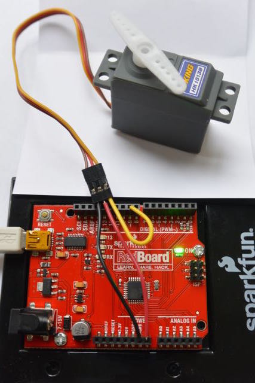

<li><b>Servomotors.</b> A servomotor moves to a programmed position, usually in a range of zero to 180 degrees, although some servos are
continuosly rotating. The ones that we have, as pictured below, are the 180 degree type, and have three leads. The brown lead
is connected to ground, the orange to a voltage source, (in this case, to vin), and the yellow lead to an output pin of the
Arduino. It is OK for the power lead to be at a higher voltage than the signal (yellow) lead, which would be the case if you
used an external power supply of voltage greater than 5V.</li>

<p><a href="./Servo_example.ino">Here</a> is code to run a servomotor between 0 and 180 degrees.</p>